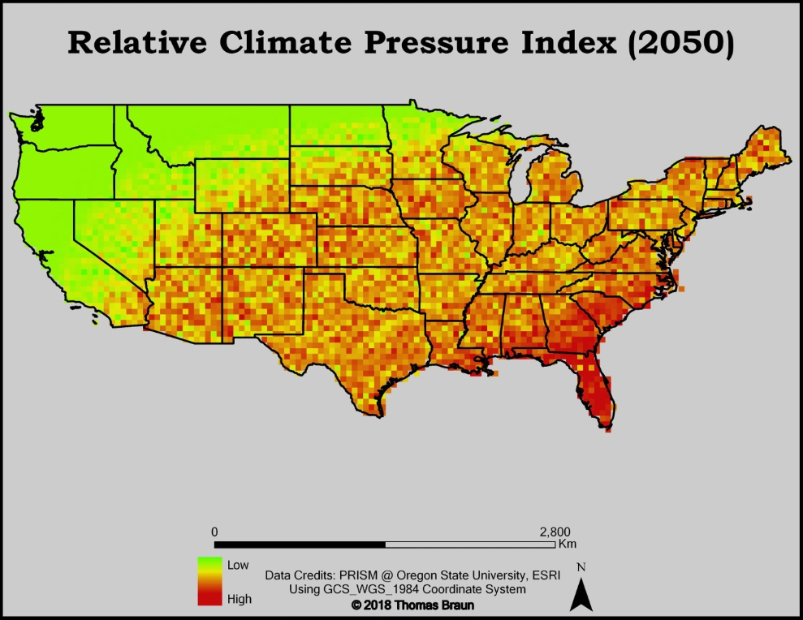

Climate Change in the USA By Thomas Braun The Green-Zone: The Pacific Northwest  115 Years of Oregon Climate Data Load Unload The Red-Zone: The Southeast USA 115 Years of Florida Climate Data Load Unload Credits Videohttps://climate.nasa.gov/climate_resources/101/video-global-temperature-variation/ FaviconObtained via IconFinder Javascript LibrariesD3.js, C3.js, Leaflet.js Climate Data (Dynamic Maps): https://www.kaggle.com/berkeleyearth/climate-change-earth-surface-temperature-data Climate Data (Static Maps): PRISM Project @ Oregon State University HTML/JS/CSS libs: https://webslides.tv/ Google Fonts: https://fonts.googleapis.com/css?family=Playfair+Display&display=swap